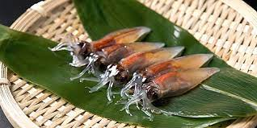

富山県 高岡市周辺

今回紹介する富山県高岡市周辺は、今年一人旅で向かった場所です。
特にこれと言った有名な観光地はありませんが、
とても楽しめたので実際に見た感想を交えつつ紹介させて頂きます。
SPOT
-
高岡大仏
高岡市の大佛寺にある青銅製阿弥陀如来坐像「高岡大仏」。高さ：16m
高岡大仏が鎮座する台座の内部は回廊になっており、壁面には地獄絵などの仏画13作や、1900年の大火で類焼した2代目高岡大仏の焼け残りとされるご尊顔が安置されており、参拝とともに心落ち着く時間を体験することができます。
感想：思ってたより町中にポツンといる感じ。近くにある茶屋の店員さんが良い人過ぎて最高でした。 -
国定公園 雨晴海岸
海越しの女岩と立山連峰はまさに絶景スポット。海を挟み標高3,000m級の山々を望むことが出来る景色は、世界でもなかなか見ることができない絶景です。
「日本の渚百選」、「白砂青松百選」、「日本の海水浴場88選」にも選ばれるなど、素晴らしい風景とともに夏場は遠浅で絶好の海水浴場にもなる人気の海岸。
感想：あまり綺麗には見えなかった。猛暑なのもあって気分下がってました。 -
国宝 高岡山瑞龍寺
荘厳かつ美しい佇まいの瑞龍寺は、高岡の開祖、加賀前田家2代当主前田利長の菩提寺です。前田利長公の菩提を弔うために3代当主前田利常により建立された、壮大な伽藍配置様式の豪壮にして典雅な美しさに圧倒される、加賀藩百二十万石の財力を如実に示す建造物です。
鉛板葺きの仏殿屋根や檜と戸室石をふんだんに使った堂内、仏殿を囲むように左右対称に造られた回廊、美しい天井画など、見どころも満載。
感想：静かで厳かな雰囲気を感じれてとてもいい場所だった。見応えありすぎた。
FOOD
- 富山ブラック
-
富山ブラック
富山ブラックとは、昭和30年ころに富山県富山市で誕生したご当地ラーメン
汗をかく肉体労働者のために塩分補給として、味の濃いスープの醤油ラーメンを作ったのがはじまりで、ごはんと一緒に食べることも意識され、塩辛いスープになったといわれる。
感想：しょっぱい。自分は好きな味だったけど、今まで食べたラーメンの中で一番体に悪い気がした。
- ます寿司
-
ます寿司
塩漬けされた美しいますの切り身と上質な米を使い、1つずつ丁寧に作られているます寿司。江戸時代に、富山藩士の吉村新八が3代目藩主である前田利興へ献上したのが起源であるといわれています。
富山県の郷土料理として知られ、店ごとにさまざまな味が楽しめて、駅弁としても人気があります。富山市内だけでも10を超える店舗でます寿司が販売されており、どの店でも熟練した職人達によって丁寧に作り上げられた逸品を味わえます。店によって味が異なるため、食べ比べてみるのもおすすめです。
感想：酢がしつこ過ぎずでとても好きな味だった。また食べたい。 - ホタルイカ
-

ホタルイカ
春になるとともに旬を迎えるホタルイカは、プリプリ・コリコリとした食感が特徴。富山湾ではホタルイカの漁獲が盛んであるため、富山名物として知られています。
富山湾のホタルイカは定置網で漁獲されるため、傷がつきにくく新鮮です。刺身の他、沖漬けや黒づくり、ボイルなどで楽しめます。
これは食べてないので感想ないです。食べたかった。